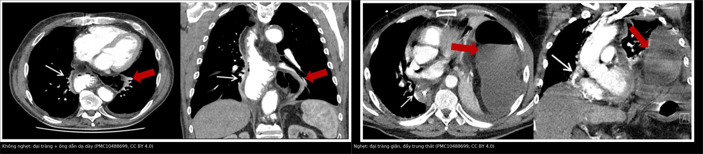
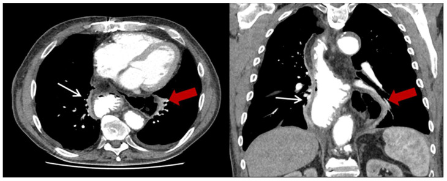
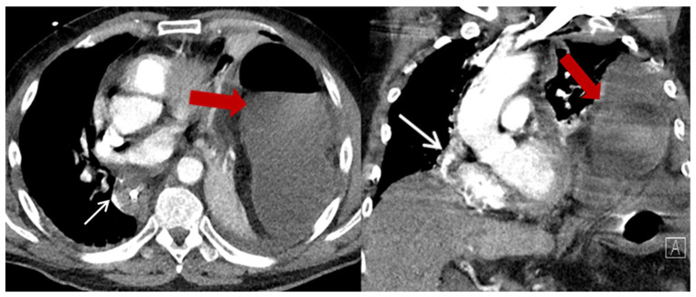
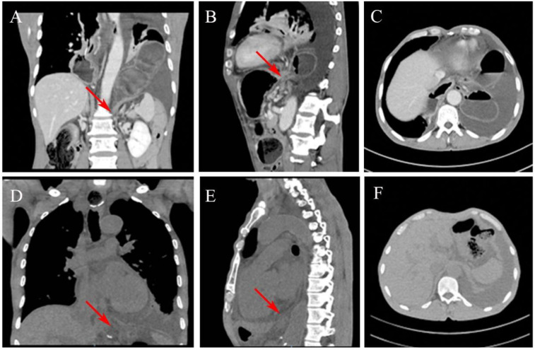

1893 — Thoát vị hoành sau cắt thực quản / Post-esophagectomy hiatal hernia (PEHH, paraconduit hernia)
Tags: pattern:thoat-vi pattern:quai-ruot-trong-nguc vung:co-hoanh vung:trung-that vung:nguc protocol:CT-nguc
Mức chắc chắn (certainty): tổng hợp y văn (literature synthesis) — biên từ phân tích gộp 34 nghiên cứu / 837 ca PEHH (Esophagus 2026, PMID 41449286), đoàn hệ 306 ca Ivor Lewis (J Clin Med 2023, PMC10488699, CC BY 4.0), đoàn hệ 371 ca MIE (Surg Endosc 2025, PMID 40045058) và ca lâm sàng có ảnh (Front Surg 2025, PMC12018370, CC BY 4.0). Nhóm không có bệnh nhân của mình.
Câu chốt: sau cắt thực quản, lỗ hoành bị mở rộng có chủ ý và không còn cơ thắt dưới thực quản; ống dẫn dạ dày (gastric conduit) nằm lấp lỗ hoành nhưng đại tràng ngang nằm ngay dưới, chỉ chờ chênh áp lồng ngực–ổ bụng để chui lên cạnh ống dẫn — gọi là thoát vị cạnh ống dẫn (paraconduit hernia). Tần suất gộp 4,1% (34 nghiên cứu, 837 ca), mổ nội soi tăng nguy cơ OR 5,70; 57–60% KHÔNG có triệu chứng, nhưng 17–48% ca được mổ là cấp cứu vì nghẹt/xoắn — tử vong chung 2,1%, biến chứng 31,7%. Chốt hình ảnh nằm ở mặt phẳng vành–dọc (coronal–sagittal MPR), không phải lát cắt ngang.
1. Tổng quan bệnh học – cơ chế hình ảnh (TẠI SAO)
1.1 Định nghĩa — đừng gọi "thoát vị hoành" chung chung
- PEHH (post-esophagectomy hiatal hernia) = paraconduit hernia: tạng ổ bụng KHÁC ống dẫn dạ dày (đại tràng, ruột non, mạc nối, đôi khi lách/túi mật) thoát qua lỗ hoành vào trung thất, nằm cạnh ống dẫn. Định nghĩa của đoàn hệ 306 ca loại trừ chính ống dẫn dạ dày khỏi "tạng thoát vị" (PMC10488699).
- Hệ quả thuật ngữ: "dạ dày ống dẫn nằm trong lồng ngực" là thiết kế của phẫu thuật — không phải PEHH. Chỉ khi có tạng thứ hai cạnh ống dẫn mới đúng là biến chứng cần xử trí. Đây là bẫy đọc phim số một ở bệnh nhân theo dõi sau mổ.
1.2 Vì sao đúng bệnh nhân này — 4 yếu tố cơ học
- Lỗ hoành bị mở rộng có chủ ý: trong mổ nội soi, phẫu thuật viên cắt cơ hoành phải (hiatotomy) để lấy rộng thực quản/ống dẫn → lỗ hoành rộng hơn sinh lý, mép cơ mỏng và xơ sau mổ (PMC10488699, Hình 5).
- Mất "nút chặn" sinh lý: cắt thực quản lấy đi cơ thắt dưới thực quản và dây chằng hoành–thực quản; ống dẫn dạ dày không có cơ thắt, không co bóp, nên lỗ hoành chỉ còn dính xơ lỏng lẻo quanh ống.
- Đại tràng ngang là "hàng xóm" trực tiếp: nó nằm sát ngay dưới lỗ hoành, mạc treo ngang dài và di động → khi áp lực ổ bụng > áp lực lồng ngực (ho, thở máy, chướng hơi, nôn), đại tràng bị hút lên trước tiên. Số liệu: đại tràng có mặt trong 100% ca, ruột non thêm 13%; 78,3% thoát vị sang ngực TRÁI, 13% khu trú giữa trung thất thấp (PMC10488699).
- Xạ trị tân bổ trợ (nCRT) làm mô xơ–dính, giảm khả năng lành của mép cơ hoành: nCRT làm tăng nguy cơ OR 3,53 (PMID 41449286). Ngược lại, béo (BMI > 25) làm GIẢM nguy cơ (OR 0,84) — mỡ mạc treo dày, lỗ hoành bị "bít" chặt hơn; đoàn hệ MIE cũng thấy BMI < 25 là yếu tố nguy cơ độc lập (OR 2,96; KTC 1,22–7,20) (PMID 40045058).
1.3 Vật lý hình ảnh — vì sao CT là chìa khóa và vì sao lát ngang dễ bỏ sót
- Đại tràng chứa hơi có đậm độ −800 đến −1.000 HU, tương phản cực mạnh với trung thất 30–50 HU → nhìn thấy ngay cả trên cửa sổ trung thất (không cần cửa sổ phổi). Nhưng đại tràng chứa đầy dịch chỉ 0–20 HU, trùng đậm độ với nang trung thất, tụ dịch, hoại tử u → dễ bị đọc là "nang/khoang dịch trung thất".
- Lỗ hoành là mặt phẳng NGHIÊNG, không song song với lát cắt ngang: một lát axial 5 mm cắt xiên qua "cổ túi thoát vị", nên chỉ thấy một vòng ruột đơn độc trong trung thất — không thấy chỗ nối với ổ bụng → không phân biệt được thoát vị vs nang. Trong ca Front Surg 2025, lần đọc đầu tiên trên axial kết luận "không có thoát vị", phải đọc lại trên MPR vành/dọc mới thấy đại tràng ngang chui qua lỗ hoành (PMC12018370, Hình 2C so với 2A–B).
- Hệ quả thực hành: mọi CT theo dõi sau cắt thực quản phải dựng lại MPR vành + dọc và lần theo ống dẫn từ trung thất xuống ổ bụng — đây là cửa sổ duy nhất chứng minh "cổ túi thoát vị" và phân biệt tạng thoát vị với ống dẫn.
1.4 Số phải nhớ
- Tần suất gộp: 4,1% (34 nghiên cứu, 837 ca) (PMID 41449286); một trung tâm 306 ca: 8% toàn bộ, 13,8% sau hybrid MIE vs 1,3% sau mổ mở (p < 0,001) (PMC10488699); 371 ca MIE: 6,7% (PMID 40045058).
- Thời điểm: trung vị 24 tháng sau mổ (khoảng 2–99 tháng) (PMID 40045058, PMID 42989883) — nghĩa là năm thứ 2–8, không phải "biến chứng sớm".
- Triệu chứng: 56,5–60% không triệu chứng, phát hiện tình cờ trên CT theo dõi; 43,5% đau bụng/khó chịu; 17,4% vào cấp cứu (1 tắc ruột, 3 nghẹt ruột) (PMC10488699); ở nhóm được mổ của đoàn hệ MIE, 48% mổ cấp cứu (PMID 40045058); series 8 ca của Hernia 2024: 8/8 vào vì tắc ruột, 50% phải chuyển mổ mở, 1 ca hoại tử + thủng ruột (PMID 39066882).
- Kết cục: biến chứng sau mổ 31,7%, tử vong 2,1% (PMID 41449286); 50,4% ca PEHH được mổ nội soi.
- Tái phát sau vá: 31,6% (6/19) (PMC10488699); các series khác 13,3–29%; kỹ thuật rạch cơ hoành giải áp (diaphragmatic relaxing incision) + lưới: 15 ca, lỗ thoát vị trung vị 70 mm (65–100 mm), tái phát 6,7%, biến chứng 13,3% (nuốt khó thoáng qua) (PMID 42989883).
2. Mẫu hình + chẩn đoán phân biệt theo vị trí (Gamut)
- A — Tình cờ trên CT theo dõi, bệnh nhân hoàn toàn khỏe: hình quai đại tràng có hơi (± mức dịch) trong trung thất sau/ngực trái, cạnh ống dẫn dạ dày đang đổ đầy dịch; cổ túi tại lỗ hoành. Chiếm ~57% (PMC10488699) → DDx: thoát vị hoành sau mổ, thoát vị hoành trước mổ (type III/IV), hạch/khối trung thất, quai ruột non trong trung thất do thoát vị qua màng phổi.
- B — Nuốt khó, nôn, đầy bụng sau ăn, sụt cân: ống dẫn giãn nhưng không có tạng thứ hai → nghĩ làm rỗng ống dẫn chậm (delayed gastric conduit emptying, DGCE); nếu có quai đại tràng chèn cạnh ống dẫn → PEHH gây chèn ép cơ học. Hai bệnh cảnh trùng triệu chứng, khác hoàn toàn điều trị.
- C — Đau ngực/đau bụng dữ dội + nôn + không trung tiện: quai ruột giãn rõ, mức dịch–hơi, xoắn quanh trục mạc treo (volvulus), thành ruột dày, không ngấm thuốc, khí trong thành (pneumatosis) → nghẹt/hoại tử — cấp cứu ngoại khoa. Ca điển hình: xoắn đại tràng ngang trong ngực = thoát vị hoành type IV (PMC10097545).
- D — Khó thở + mờ đáy phổi một bên: hình khối mềm lớn chiếm nửa ngực trái, đẩy trung thất sang phải, kèm tràn dịch màng phổi → DDx thoát vị giãn căng (tension viscus), tràn dưỡng trấp (bài 1887/1857), tràn dịch ác tính (bài 040), xẹp phổi do ống dẫn giãn.
- E — Sốt, đau ngực, dịch trung thất: rò miệng nối thực quản–ống dẫn hoặc hoại tử ruột thoát vị đã thủng → khí + dịch trung thất; đừng chỉ nghĩ rò miệng nối.
3. Bảng so sánh phân biệt (ma trận đối chiếu)
| Thực thể (entity) | Hình ảnh điển hình | Chốt vào (rule-in) | Chốt loại (rule-out) | Gợi ý xác nhận |
|---|---|---|---|---|
| PEHH không nghẹt | Quai đại tràng có hơi trong trung thất, cạnh ống dẫn, cổ túi ở lỗ hoành | Thấy liên tục quai ruột từ ổ bụng qua lỗ hoành trên MPR vành/dọc | Chỉ thấy "khoang dịch" trên axial, không thấy cổ túi → chưa loại trừ, phải dựng MPR | CT ngực–bụng có cản quang, MPR vành + dọc |
| PEHH nghẹt/xoắn | Quai giãn, mức dịch–hơi, xoắn mạc treo, thành dày, không ngấm thuốc | Mất liên tục thành + khí trong thành + dịch tự do = hoại tử | Thành mỏng, ngấm thuốc đều, quai xẹp → chưa nghẹt | CTA bụng–ngực, mổ cấp cứu |
| Làm rỗng ống dẫn chậm (DGCE) | Ống dẫn giãn to, đầy dịch/khí, không có tạng thứ hai trong trung thất | Ống dẫn giãn to + chậm xả thuốc khi chụp cản quang đường uống | Có quai ruột cạnh ống dẫn → PEHH, không phải DGCE đơn thuần | X-quang/CT cản quang đường uống, nội soi |
| Tái phát u / hạch trung thất | Khối đặc, ngấm thuốc, không có hơi, bờ không đều | Ngấm thuốc + PET dương + không thay đổi theo tư thế | Có hơi/dịch trong quai, thay đổi hình khi đổi tư thế → tạng | PET-CT, sinh thiết |
| Rò miệng nối | Khí + dịch quanh miệng nối, thành ống dẫn khiếm khuyết | Thuốc cản quang thoát ra ngoài lòng trên phim cản quang | Không thấy đường rò, khí khu trú trong quai ruột | Cản quang tan trong nước, nội soi |
| Thoát vị hoành do chấn thương (bài 3082) | Vỡ cơ hoành, tạng "tựa lưng", dấu "cổ áo" | Tiền sử chấn thương + mất liên tục cơ hoành rộng | Cơ hoành liên tục, lỗ hoành giãn đều sau mổ | CT có MPR, so phim trước mổ |
| Tràn dưỡng trấp màng phổi (bài 1887/1857) | Dịch màng phổi một bên, không có quai ruột | Triglyceride dịch > 110 mg/dL + chylomicron | Có quai ruột trong ngực → PEHH là nguyên nhân chính | Chọc dò sinh hóa dịch |

Trái: quai đại tràng (mũi tên đỏ) cạnh ống dẫn dạ dày (mũi tên trắng), thành mỏng, không giãn. Phải: quai giãn lớn, mức dịch–hơi, đẩy trung thất — nghẹt. Nguồn: J Clin Med 2023 (PMC10488699), CC BY 4.0. Ảnh ghép letterbox.4. Protocol chụp + hệ phân độ + lưu đồ xử trí
- Chỉ định: mọi CT ngực theo dõi sau cắt thực quản (3–6 tháng/lần trong 2 năm đầu, sau đó 6–12 tháng) — không chờ triệu chứng, vì 57% không triệu chứng.
- Kỹ thuật: CT ngực + bụng trên (đến đỉnh khung chậu để thấy đại tràng ngang), lát ≤ 1–1,5 mm, có cản quang tĩnh mạch, dựng MPR vành + dọc; cửa sổ trung thất + cửa sổ phổi; nếu nghi DGCE/rò: cản quang đường uống tan trong nước.
- Đo và ghi (không có score chuẩn hóa cho PEHH — ghi đủ để so sánh lượt sau):
- đường kính lỗ hoành (mm) tại cổ túi, vị trí (trái/phải/giữa trung thất thấp);
- tạng thoát vị (đại tràng / ruột non / mạc nối / lách);
- dấu nghẹt: giãn quai rõ, mức dịch–hơi, thành dày, không ngấm thuốc, khí trong thành, dịch tự do, đẩy trung thất — chưa có ngưỡng mm được thẩm định riêng cho PEHH, nên ghi mô tả + so sánh với lượt trước;
- vị trí + độ giãn ống dẫn (để phân biệt DGCE).
- Hệ phân độ dùng trong y văn: thoát vị hoành type IV (tạng khác dạ dày) là mô tả giải phẫu áp cho PEHH; không có phân độ riêng cho PEHH — nhiều tác giả phân theo có/không triệu chứng và cấp cứu/không cấp cứu.
flowchart TD
A["CT theo dõi sau cắt thực quản: có tạng trong trung thất"] --> B{"Có quai ruột cạnh ống dẫn trên MPR vành/dọc?"}
B -->|Không| C["Chỉ ống dẫn giãn: nghĩ DGCE hoặc hẹp miệng nối"]
B -->|Có| D{"Dấu nghẹt: thành dày, không ngấm thuốc, khí trong thành, quai giãn?"}
D -->|Có| E["CẤP CỨU: hội chẩn ngoại, mổ nội soi/thoracoscopy giải phóng + vá"]
D -->|Không| F{"Có triệu chứng chèn ép?"}
F -->|Có| G["Mổ chương trình: hiatoplasty ± lưới, cân nhắc rạch cơ hoành giải áp"]
F -->|Không| H["Theo dõi + tư vấn: dấu hiệu cấp cứu; chụp lại 3-6 tháng"]
H --> I["Tái phát 13-32% sau vá: theo dõi lâu dài"]
5. Biến thể bình thường và cạm bẫy
- Ống dẫn dạ dày nằm trong trung thất là BÌNH THƯỜNG — đừng gọi PEHH. Đây là lý do phải lần theo ống dẫn trước khi kết luận.
- Axial-only là bẫy chết người: ca Front Surg 2025 có hai lần đọc CT đều "không có thoát vị" trên axial, chỉ khi dựng lại vành/dọc mới thấy đại tràng ngang chui lên (PMC12018370). Quy tắc: không kết luận "không thoát vị" nếu chưa xem MPR vành/dọc.
- Quai ruột đầy dịch = "nang trung thất": đậm độ 0–20 HU, bờ trơn, không hơi → dễ đọc là nang phế quản/lymphocele/tụ dịch. Dấu phân biệt: thành ruột có lớp, mạch máu mạc treo đi vào, liên tục với ổ bụng qua lỗ hoành.
- Hơi trong quai bị đọc là tràn khí trung thất/áp-xe: hơi trong lòng quai có thành bao quanh và có mức dịch; khí trung thất thật là những "bọt" rời trong mô mỡ, không có thành.
- Satisfaction of search: sau khi thấy ống dẫn giãn/tràn dịch màng phổi, người đọc dừng lại — luôn quét toàn bộ trung thất và lỗ hoành ở mọi lát.
- Thoát vị "trượt" theo tư thế: quai đại tràng có thể lên khi nằm, xuống khi đứng → chụp ngửa là chuẩn; nếu CT ngửa âm tính mà lâm sàng mạnh, chụp cản quang đường uống hoặc CT tư thế khác.
- Biến thể bình thường: túi mù/đại tràng sigma dài trong ổ bụng, thoát vị đùi/bẹn nhỏ, thoát vị quanh thực quản type I trước mổ — không liên quan đường mổ, đừng quy cho PEHH.
6. Tự lượng giá — Blind Quiz
Ca 1 — Nam 64 tuổi, 14 tháng sau Ivor Lewis vì ung thư biểu mô vảy thực quản, khám định kỳ, hoàn toàn không triệu chứng. CT ngực có cản quang.

- Gợi ý lâm sàng: không đau, không nôn, ăn uống bình thường; chỉ chụp theo lịch.
- Câu hỏi: cấu trúc nào nằm trong ngực trái? Có phải ống dẫn dạ dày không? Dấu hiệu nào chứng minh đây là tạng thứ hai? Có cần mổ ngay không?
Bấm để hiện đáp án
- Findings: trong ngực trái, cạnh ống dẫn dạ dày (mũi tên trắng) có quai đại tràng chứa hơi (mũi tên đỏ); lỗ hoành giãn, cổ túi thấy rõ trên MPR vành. Thành quai mỏng, không có mức dịch–hơi lớn, không đẩy trung thất → PEHH không nghẹt.
- Chẩn đoán: thoát vị hoành cạnh ống dẫn sau cắt thực quản (PEHH) — đại tràng ngang thoát vị qua lỗ hoành đã được mở rộng trong mổ.
- Xử trí: đây là nhóm 57% không triệu chứng. Y văn không thống nhất: một số tác giả khuyến cáo mổ chương trình sớm vì nguy cơ nghẹt không dự báo được (PMC10488699), phân tích gộp 2026 lại khuyến cáo cá thể hóa dựa trên tiên lượng ung thư (PMID 41449286). Thực hành an toàn: tư vấn dấu hiệu cấp cứu + chụp lại 3–6 tháng.
- Nguồn ảnh: J Clin Med 2023, Hình 2, PMC10488699, CC BY 4.0.
Ca 2 — Nữ 58 tuổi, 20 tháng sau MIE, vào cấp cứu: đau bụng dữ dội, nôn ra dịch, bụng chướng, không trung tiện.

- Câu hỏi: dấu hiệu nào cho biết đã nghẹt? Hai biến chứng phải loại trừ ngay trên CT? Thái độ điều trị?
Bấm để hiện đáp án
- Findings: quai đại tràng giãn rất lớn trong ngực trái, mức dịch–hơi, đẩy trung thất sang phải rõ rệt; ống dẫn dạ dày (mũi tên trắng) bị chèn. Đây là thoát vị giãn căng + nghẹt.
- Phải loại trừ: (1) hoại tử ruột — thành dày/không ngấm thuốc, khí trong thành, dịch tự do; (2) thủng — khí ngoài lòng, dịch trung thất. Cả hai = mổ cấp cứu, không nong/nội soi.
- Xử trí: hồi sức + mổ cấp cứu (nội soi ngực/bụng hoặc mở): giải phóng quai, đánh giá sống còn của ruột, cắt nếu hoại tử, vá lỗ hoành (khâu thì đầu ± lưới; lỗ rộng > 7 cm cân nhắc rạch cơ hoành giải áp).
- Con số: nhóm mổ cấp cứu có biến chứng 31,7%, tử vong 2,1% trong phân tích gộp; series Hernia 2024 8/8 vào vì tắc ruột, 1 ca hoại tử/thủng (PMID 39066882).
- Nguồn ảnh: J Clin Med 2023, Hình 4, PMC10488699, CC BY 4.0.
Ca 3 — Bệnh nhân 62 tuổi, 8 tháng sau McKeown, đau bụng + nôn; CT lần 1 kết luận "không thoát vị". Đọc lại thì sao?

- Câu hỏi: vì sao lượt đọc đầu bỏ sót? Mặt phẳng nào chứng minh chẩn đoán? Nêu 2 dấu hiệu trên ảnh C/F (axial).
Bấm để hiện đáp án
- Vì sao bỏ sót: lỗ hoành nghiêng so với mặt phẳng axial → lát ngang chỉ cắt một đoạn quai, không thấy cổ túi nối với ổ bụng; trên ảnh C (axial) thoát vị mờ nhạt, còn A/B (vành/dọc) thấy rõ đại tràng ngang chui qua lỗ hoành. Ảnh D/E là lượt đọc lại trên MPR — chẩn đoán hiện ra rõ.
- Chốt: MPR vành + dọc (và lần theo ống dẫn) là bắt buộc; axial một mình không đủ để loại trừ.
- Bài học: khi bệnh nhân sau cắt thực quản có triệu chứng tắc ruột mà CT axial âm tính, đọc lại MPR trước khi kết luận, và xem phim cũ so sánh.
- Nguồn ảnh: Front Surg 2025, Hình 2, PMC12018370, CC BY 4.0.
Bài liên quan chéo
- 001 – Tổng quan hệ Ngực
- 1887 – Rò dưỡng trấp sau cắt thực quản (cùng bệnh nhân, biến chứng sớm)
- 3082 – Vỡ cơ hoành sau chấn thương (dấu "cổ áo", tạng "tựa lưng")
- 1872 – Thoát vị Littre (tạng trong túi thoát vị)
- 1844 – Rò và hoại tử thực quản do xạ
- 040 – Tràn dịch màng phổi (dịch kèm khối mờ đáy phổi)
- 1857 – Tràn dưỡng trấp màng phổi sau mổ cột sống
Ảnh
- Tên file:
1893_thoat-vi-hoanh-sau-cat-thuc-quan_CT-*.jpg; nguồn + giấy phép từng ảnh trongimages/CREDITS.md.
Không dùng để chẩn đoán độc lập khi chưa có người hướng dẫn.